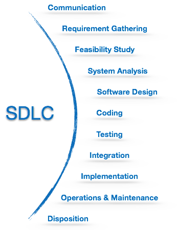

<!doctype html>
<html lang="sv">
<meta charset="utf-8" />
<title>phpmvc</title>

<!-- Mithril HTML Slideshow styles -->
<link href="css/mithril-slideshow.css" rel="stylesheet" />

<!-- Code formatting using highlight.js -->
<link rel="stylesheet" href="css/default.css">
<link rel="stylesheet" href="css/tomorrow.css">
<script src="js/highlight.pack.js"></script>

<!-- Text formatting using Markdown through showdown.js -->
<script src="js/showdown.min.js"></script>


<!-- Here comes the slides in order -->
<script data-role="slide" class="center" data-markdown type="text/html">
#phpmvc
##kmom05
###Bygg ut ramverket
</script>


<script data-role="slide" data-markdown type="text/html">
#Agenda

* Allmänt programutveckling
* Översikt av kmom05

</script>


<script data-role="slide" class="center" data-markdown type="text/html">

</script>


<script data-role="slide" class="center" data-markdown type="text/html">

</script>


<!-- Here comes the slides in order -->
<script data-role="slide" data-markdown type="text/html">
#composer.json

<pre data-code="composer.json"></pre>
</script>

<script id="composer.json" data-role="code" data-language="javascript" type="text/html">
{
    "require": {
        "mos/anax":         "dev-master",
        "mos/ctextfilter":  "dev-master",
        "geshi/geshi":      "dev-master",
        "mos/cimage":       "@dev",
        "mos/cform":        "2.x-dev",
        "ext-yaml":         "*"
    }
}
</script>


<script data-role="slide" data-markdown type="text/html">
#SWEBOK

* Software Engineering Body of Knowledge
* Internationell standard
* [SWEBOK 2004](http://www.math.unipd.it/~tullio/IS-1/2007/Approfondimenti/SWEBOK.pdf)
* [SWEBOK V3](https://www.computer.org/web/swebok/v3)

</script>


<script data-role="slide" data-markdown type="text/html">
#SWEBOK 2004 Områden

* Software requirements
* Software design
* Software construction
* Software testing
* Software maintenance
* Software configuration management
* Software engineering management
* Software engineering process
* Software engineering tools and methods
* Software quality

</script>


<script data-role="slide" data-markdown type="text/html">
#SWEBOK V3 ytterligare områden

* Software engineering professional practice
* Software engineering economics
* Computing foundations
* Mathematical foundations
* Engineering foundations

</script>


<script data-role="slide" data-markdown type="text/html">
#Software Development Life Cycle

* Hur går man tillväga när man jobbar i projekt?
* Skillnad på första projektet och v3.0?

</script>


<script data-role="slide" class="center" data-markdown type="text/html">

</script>


<script data-role="slide" data-markdown type="text/html">
#DevOps

* Developer versus Operations
* Trendigt
* Bra förstå många roller
* Svårt att vara duktigt på allt
* Startups med få anställda?

</script>


<script data-role="slide" data-markdown type="text/html">
#DevOps

> "DevOps" is meant to denote a close collaboration and cross-pollination between what were previously purely development roles, purely operations roles, and purely QA roles.

> "Developers must also take responsibility for the quality of the testing and release environments."

</script>


<script data-role="slide" data-markdown type="text/html">
#Många hattar

* DevOps
* Fullstack developer
* [How DevOps is killing the Developer](https://jeffknupp.com/blog/2014/04/15/how-devops-is-killing-the-developer/)

</script>


<script data-role="slide" data-markdown type="text/html">
#Leo Horie och [Mithril](https://lhorie.github.io/mithril/)

* JavaScript lib för SPA applikationer
* Arkitektur för Komponeneter, Modeller, Controller, Vyer, View-Models, data bindings
* Asynkron programmering, eventdriven.
* Design patterns
* Test, issues, releasehantering, guide, manualer, community

</script>


<script data-role="slide" class="center" data-markdown type="text/html">
#Kmom05

</script>


<script data-role="slide" class="center" data-markdown type="text/html">
#The MicroPHP Manifesto 

</script>


<script data-role="slide" class="center" data-markdown type="text/html">

</script>


<script data-role="slide" class="center" data-markdown type="text/html">

</script>


<script data-role="slide" class="center" data-markdown type="text/html">

> "You can fit the entirety of Black Flag in the space of Neil Peart’s drum kit. And they would still play awesome shit and rock you the fuck out."

</script>


<script data-role="slide" data-markdown type="text/html">
#I am a PHP developer

* I am not a Zend Framework or Symfony or CakePHP developer
* I think PHP is complicated enough

</script>


<script data-role="slide" data-markdown type="text/html">
#I like building small things

* I like building small things with simple purposes
* I like to make things that solve problems
* I like building small things that work together to solve larger problems

</script>


<script data-role="slide" data-markdown type="text/html">
#I want less code, not more

* I want to write less code, not more
* I want to manage less code, not more
* I want to support less code, not more
* I need to justify every piece of code I add to a project

</script>


<script data-role="slide" data-markdown type="text/html">
#I like simple, readable code

* I want to write code that is easily understood
* I want code that is easily verifiable

</script>


<script data-role="slide" data-markdown type="text/html">
#Microframework kontra Framework

* Moduler
* Dependency injection
* Router, Request, Response
* Nedskalade från ramverk, eller byggda från scratch

</script>


<script data-role="slide" data-markdown type="text/html">
#Flat File CMS

* [v2.dbwebb.se](http://v2.dbwebb.se) ([GitHub](https://github.com/dbwebb-se/website))
* [Grav](https://getgrav.org/), [Pico](http://picocms.org/)
* Flat File webbplatser, en trend?

</script>


<script data-role="slide" data-markdown type="text/html">
#HMVC

* Hierarchical-Model-View-Controller pattern

</script>


<script data-role="slide" class="center" data-markdown type="text/html">

</script>


<script data-role="slide" data-markdown type="text/html">
#HMVC...

* Organisera koden i triader av controller/vy/modeller.
* Skala bättre (flera maskiner).
* `forward()`

</script>


<script data-role="slide" data-markdown type="text/html">
#Att välja modul

* Beroenden till andra moduler?
* Module kan göra `require mos/anax-mvc`.

</script>


<script data-role="slide" class="center" data-markdown type="text/html">
#Frågor på det?
</script>


<script data-role="slide" data-markdown type="text/html">
</script>


<!-- include essential js-script -->
<script src="js/mithril.min.js"></script>
<script src="js/mithril-slideshow.js"></script>
</html>
